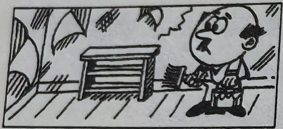
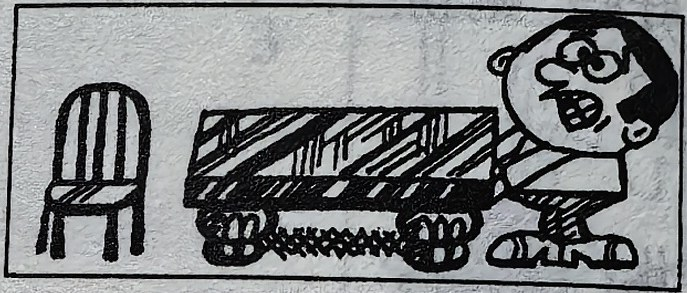
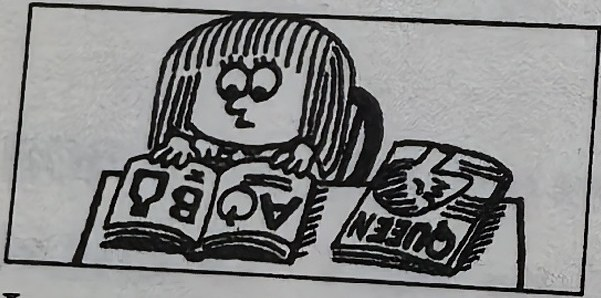
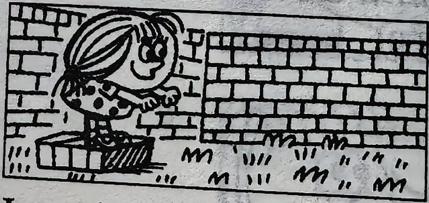
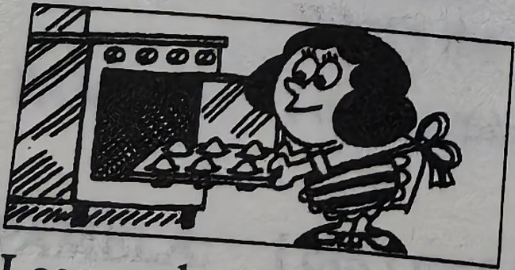
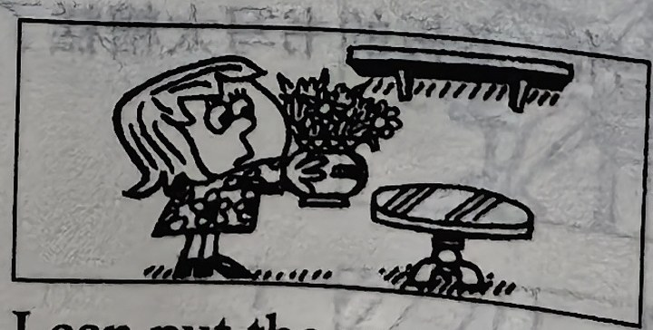

Lesson content · 课文
Lesson 46: Can you ...? · 你能……吗？
Listen and answer the questions. 听录音并回答问题。
but I can’t put my coat on.
but I can’t see a bird.

but I can’t paint this room." loading="lazy" decoding="async">but I can’t paint this room.

but I can’t lift this table." loading="lazy" decoding="async">but I can’t lift this table.

but I can’t read that magazine." loading="lazy" decoding="async">but I can’t read that magazine.

but I can’t jump off that wall." loading="lazy" decoding="async">but I can’t jump off that wall.

but I can’t make biscuits." loading="lazy" decoding="async">but I can’t make biscuits.

but I can’t put it on that shelf." loading="lazy" decoding="async">but I can’t put it on that shelf.
New words and expressions · 生词和短语
| Word · 单词 | Pronunciation · 音标 | Meaning · 词义 |
|---|---|---|
| lift | /lɪft/ | v. 拿起，搬起，举起 |
| cake | /keɪk/ | n. 饼，蛋糕 |
| biscuit | /ˈbɪskɪt/ | n. 饼干 |
Practice · 课文练习
Written exercises · 书面练习
A. Rewrite these sentences · 改写句子
Rewrite these sentences. 模仿例句改写以下句子。
Example · 例句
He is taking his book. → He can take his book.
She is putting on her coat. → She can put on her coat.
-
textbook: A. Rewrite these sentences · 改写句子 — They are typing these letters.
-
textbook: A. Rewrite these sentences · 改写句子 — She is making the bed.
-
textbook: A. Rewrite these sentences · 改写句子 — You are swimming across the river.
-
textbook: A. Rewrite these sentences · 改写句子 — We are coming now.
-
textbook: A. Rewrite these sentences · 改写句子 — We are running across the park.
-
textbook: A. Rewrite these sentences · 改写句子 — He is sitting on the grass.
-
textbook: A. Rewrite these sentences · 改写句子 — I am giving him some chocolate.
B. Questions and answers · 对话练习
Write questions and answers using I, he, she, it, we or they. 模仿例句写出相应的对话，选用 I、he、she、it、we 或 they 等代词。
Example · 例句
Can you put on your coat?
Yes, I can.
What can you do?
I can put on my coat.
Can you and Sam listen to the radio?
Yes, we can.
What can you and Sam do?
We can listen to the radio.
-
textbook: B. Questions and answers · 对话练习 — Can you type this letter?
-
textbook: B. Questions and answers · 对话练习 — Can Penny wait for the bus?
-
textbook: B. Questions and answers · 对话练习 — Can Penny and Jane wash the dishes?
-
textbook: B. Questions and answers · 对话练习 — Can George take these flowers to her?
-
textbook: B. Questions and answers · 对话练习 — Can the cat drink its milk?
-
textbook: B. Questions and answers · 对话练习 — Can you and Sam paint this bookcase?
-
textbook: B. Questions and answers · 对话练习 — Can you see that aeroplane?
-
textbook: B. Questions and answers · 对话练习 — Can Jane read this book?
Practice worksheet · 配套练习
A. Can and can’t
Fill in can or can’t. 用 can 或 can’t 填空。
-
worksheet: A. Can and can’t — What ____ you do? — I can lift this box, but I ____ lift that heavy chair.
-
worksheet: A. Can and can’t — What ____ Pamela do? — Well, she ____ type, but she ____ type this letter for the boss. She ____ read his handwriting!
B. Questions and answers
Ask and answer using can and can’t. 模仿例句，用 can 或 can’t 提问并回答。
Example · 例句
Can he read Chinese? — No, he can’t read Chinese, but he can read English.
-
worksheet: B. Questions and answers — she / make cakes? — biscuits
-
worksheet: B. Questions and answers — they / watch television? — listen to the stereo
-
worksheet: B. Questions and answers — we / eat in the living room? — the kitchen
-
worksheet: B. Questions and answers — I / sweep the floor? — clean the car
C. Situations
Make polite requests with Can you …? 根据情景用 Can you …? 句式写出你应该说的话。
Example · 例句
Anna, can you type these letters for me, please?
-
worksheet: C. Situations — You want Tim to turn on the lights for you.
-
worksheet: C. Situations — You want Bob to make some coffee for you.
-
worksheet: C. Situations — You want Penny to give the children these ice creams.
Grammar practice · 语法练习
I. Make sentences according to the example
- 1. I/speak English/not German
I can speak English but I can't speak German.
- 2. William/write English/not Chinese
- 3. Sophie/type/not make tea
- 4. I/climb up that tree/not jump off it
- 5. a dog/swim/not climb up a tree
- 6. she/play basketball/not football
- 7. they/speak Japanese/not write it
- 8. he/buy a small house/not a big one
- 9. you/lift this light box/not that heavy one
- 10. I/read your handwriting/not Bob's handwriting
II. Answer the questions in full sentences according to the example
- 1. What language can you speak? (English)
I/We can speak English.
- 2. What language can Ken speak? (French)
- 3. Which box can Mary lift, this one or that one? (this one)
- 4. Which book can you read, the thick one or the thin one? (the thick one)
- 5. What languages can Kathy speak? (Japanese and Korean)
- 6. What can you make, bread or cakes? (bread)
- 7. Where can he teach, in a school or in a university? (in a university)
- 8. Which word can you spell, "pen" or "book"? (the two words)
Your notes and answers
Use this space for longer responses or exercises that do not have an individual answer box.